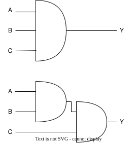
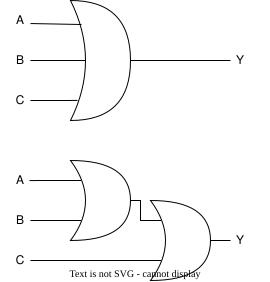
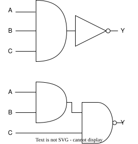
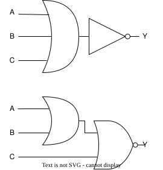
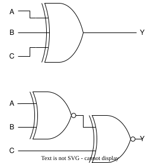

Multigate
w2d1
Logistics
Announcements
- Welcome to HW/
asm - Action Items discussion
Multiple Inputs
3-input AND
- These are logically equivalent circuits!

| A | B | C | Y |
|---|---|---|---|
| 0 | 0 | 0 | 0 |
| 0 | 0 | 1 | 0 |
| 0 | 1 | 0 | 0 |
| 0 | 1 | 1 | 0 |
| 1 | 0 | 0 | 0 |
| 1 | 0 | 1 | 0 |
| 1 | 1 | 0 | 0 |
| 1 | 1 | 1 | 1 |
3-input OR
- These are logically equivalent circuits!

| A | B | C | Y |
|---|---|---|---|
| 0 | 0 | 0 | 0 |
| 0 | 0 | 1 | 1 |
| 0 | 1 | 0 | 1 |
| 0 | 1 | 1 | 1 |
| 1 | 0 | 0 | 1 |
| 1 | 0 | 1 | 1 |
| 1 | 1 | 0 | 1 |
| 1 | 1 | 1 | 1 |
3-input NAND
- These are logically equivalent circuits!

| A | B | C | Y |
|---|---|---|---|
| 0 | 0 | 0 | 1 |
| 0 | 0 | 1 | 1 |
| 0 | 1 | 0 | 1 |
| 0 | 1 | 1 | 1 |
| 1 | 0 | 0 | 1 |
| 1 | 0 | 1 | 1 |
| 1 | 1 | 0 | 1 |
| 1 | 1 | 1 | 0 |
3-input NOR
- These are logically equivalent circuits!

| A | B | C | Y |
|---|---|---|---|
| 0 | 0 | 0 | 1 |
| 0 | 0 | 1 | 0 |
| 0 | 1 | 0 | 0 |
| 0 | 1 | 1 | 0 |
| 1 | 0 | 0 | 0 |
| 1 | 0 | 1 | 0 |
| 1 | 1 | 0 | 0 |
| 1 | 1 | 1 | 0 |
3-input XOR
- These are logically equivalent circuits!

| A | B | C | Y |
|---|---|---|---|
| 0 | 0 | 0 | 0 |
| 0 | 0 | 1 | 1 |
| 0 | 1 | 0 | 1 |
| 0 | 1 | 1 | 0 |
| 1 | 0 | 0 | 1 |
| 1 | 0 | 1 | 0 |
| 1 | 1 | 0 | 0 |
| 1 | 1 | 1 | 1 |
XOR explainer
For any number of inputs, the output is 1 when an odd number of inputs is 1
| A | B | C | Y |
|---|---|---|---|
| 0 | 0 | 1 | 1 |
| 0 | 1 | 0 | 1 |
| 1 | 0 | 0 | 1 |
| 1 | 1 | 1 | 1 |
3-input XNOR
- These are logically equivalent circuits!
| A | B | C | Y |
|---|---|---|---|
| 0 | 0 | 0 | 1 |
| 0 | 0 | 1 | 0 |
| 0 | 1 | 0 | 0 |
| 0 | 1 | 1 | 1 |
| 1 | 0 | 0 | 0 |
| 1 | 0 | 1 | 1 |
| 1 | 1 | 0 | 1 |
| 1 | 1 | 1 | 0 |
Recall: Transistor Count
| Gate | Number of Transistors |
|---|---|
| NOT | 2 |
| AND | 6 |
| OR | 6 |
| NAND | 4 |
| NOR | 4 |
| XOR | 12 |
| XNOR | 12 |
Transistor Count
| Gate | # of Transistors |
|---|---|
| n-input AND | 2n + 2 |
| n-input OR | 2n + 2 |
| n-input NAND | 2n |
| n-input NOR | 2n |
Transistor Count
| Gate | # of Transistors |
|---|---|
| 2-input XOR | 12 |
| 3-input XOR | 28 |
| 2-input XNOR | 12 |
| 3-input XNOR | 28 |
Equations from Truth Tables
Sum of Products Form
- When two or more products (AND) are summed (OR) together
| Sum of Products | Not Sum of Products |
|---|---|
| \(Y = AB + AC\) | \(Y = (A+B)(C+A)\) |
- “Simply” write down a boolean expression for every ‘1’ in the output.
Example
| A | B | C | Y |
|---|---|---|---|
| 0 | 0 | 0 | 1 |
| 0 | 0 | 1 | 0 |
| 0 | 1 | 0 | 1 |
| 0 | 1 | 1 | 0 |
| 1 | 0 | 0 | 0 |
| 1 | 0 | 1 | 1 |
| 1 | 1 | 0 | 0 |
| 1 | 1 | 1 | 0 |
Add Column
| A | B | C | Y | |
|---|---|---|---|---|
| 0 | 0 | 0 | 1 | |
| 0 | 0 | 1 | 0 | |
| 0 | 1 | 0 | 1 | |
| 0 | 1 | 1 | 0 | |
| 1 | 0 | 0 | 0 | |
| 1 | 0 | 1 | 1 | |
| 1 | 1 | 0 | 0 | |
| 1 | 1 | 1 | 0 |
Express Requirements
| A | B | C | Y | |
|---|---|---|---|---|
| 0 | 0 | 0 | 1 | !A & !B & !C |
| 0 | 0 | 1 | 0 | |
| 0 | 1 | 0 | 1 | !A & B & !C |
| 0 | 1 | 1 | 0 | |
| 1 | 0 | 0 | 0 | |
| 1 | 0 | 1 | 1 | A & !B & C |
| 1 | 1 | 0 | 0 | |
| 1 | 1 | 1 | 0 |
Sum Requirements
- Sum of products
- “OR” of “AND”’s
(!A & !B & !C) | (!A & B & !C) | A & !B & C
\[ (\neg A \land \neg B \land \neg C) \lor (\neg A \land B \land \neg C) \lor (A \land \neg B \land C) \]
Exercise
| A | B | C | Y |
|---|---|---|---|
| 0 | 0 | 0 | 0 |
| 0 | 0 | 1 | 1 |
| 0 | 1 | 0 | 0 |
| 0 | 1 | 1 | 0 |
| 1 | 0 | 0 | 1 |
| 1 | 0 | 1 | 0 |
| 1 | 1 | 0 | 1 |
| 1 | 1 | 1 | 1 |
Solution
(!A & !B & C) | (A & !B & !C) | (A & B & !C) | A & B & C
\[ (\neg A \land \neg B \land C) \lor (A \land \neg B \land \neg C) \lor (A \land B \land \neg C) \lor (A \land B \land C) \]
A Systematic Design Approach
- Write the functional spec as a truth table
- Write down a Boolean expression for every ‘1’ in the output
- Wire up the ideal gates, replace them with equivalent realizable gates, call it a day, and go home!
Pros
This approach will always give us logic
- It’s systematic!
- It works! expressions in a particular form:
- It’s easy!
- We are done! (?)
Straightforward Synthesis
A B C We can implement sum-of- A products with just 3 levels of B C logic, using… Y A INVERTERS/AND/OR! B C A B C
Let’s Try it Out
| A | A | B | B | Y | ||||
|---|---|---|---|---|---|---|---|---|
| 1 | 0 | 1 | 0 |
I want to build a circuit that will output 1 if | 0 | 0 | 0 | 0 | 0 | | | | | | — | — | — | — | — | — | — | — | — | A > B, and 0 if A <= B. A and B are both | 0 | 0 | 1 | 0 | 0 | | | | | | — | — | — | — | — | — | — | — | — | two-bit unsigned numbers. | 0 | 0 | 0 | 1 | 0 | | | | | | — | — | — | — | — | ———————- | —– | ————– | — | | 0 | 0 | 1 | 1 | 0 | | | | | | | | | | | Additionally, define 𝐴 | and 𝐵 | as the left | | | | | | | | | 1 | 1 | | | 1 | 0 | 0 | 0 | 1 | | | | | | | | | | | bits of A and B, and 𝐴 | and 𝐵 | as the right | | | | | | | | | 0 | 0 | | | 1 | 0 | 1 | 0 | 0 | | | | | bits. | 1 | 0 | 0 | 1 | 1 | | | | | | — | — | — | — | — | — | — | — | — | | 1 | 0 | 1 | 1 | 0 | | | | | | 0 | 1 | 0 | 0 | 1 | | | | | | 0 | 1 | 1 | 0 | 1 | | | | | | 0 | 1 | 0 | 1 | 0 | | | | | | 0 | 1 | 1 | 1 | 0 | | | | | | 1 | 1 | 0 | 0 | 1 | | | | | | 1 | 1 | 1 | 0 | 1 | | | | | | 1 | 1 | 0 | 1 | 1 | | | | | | 1 | 1 | 1 | 1 | 0 | | | | 35 |
Let’s Try it Out | A | A | B | B | Y | | | | | | — | — | — | — | — | — | — | — | — | | 1 | 0 | 1 | 0 | | | | | | I want to build a circuit that will output 1 if | 0 | 0 | 0 | 0 | 0 | | | | | | — | — | — | — | — | — | — | — | — | A > B, and 0 if A <= B. A and B are both | 0 | 0 | 1 | 0 | 0 | | | | | | — | — | — | — | — | — | — | — | — | two-bit unsigned numbers. | 0 | 0 | 0 | 1 | 0 | | | | | | — | — | — | — | — | ———————- | — | —– | ————– | | 0 | 0 | 1 | 1 | 0 | | | | | | | | | | | Additionally, define 𝐴 | | and 𝐵 | as the left | | | | | | | | | 1 | 1 | | 1 | 0 | 0 | 0 | 1 | | | | | | | | | | | bits of A and B, and 𝐴 | | and 𝐵 | as the right | | 1 | 0 | 1 | 0 | 0 | | | 0 | 0 | bits. | 1 | 0 | 0 | 1 | 1 | | | | | | — | — | — | — | — | — | ——————————– | — | — | | 1 | 0 | 1 | 1 | 0 | | | | | | 0 | 1 | 0 | 0 | 1 | | | | | | 0 | 1 | 1 | 0 | 0 | | | | | | 0 | 1 | 0 | 1 | 0 | | | | | | 0 | 1 | 1 | 1 | 0 | | | | | | 1 | 1 | 0 | 0 | 1 | | | | | | 1 | 1 | 1 | 0 | 1 | | Is the simplest possible form?? | | | | 1 | 1 | 0 | 1 | 1 | | | | | | 1 | 1 | 1 | 1 | 0 | | | | |
GATE MINIMIZATION
Optimizing our circuits…
■ Fewer transistors means…. – Smaller area! – Lower power consumption! – Shorter time from input to output! – Lower cost! ■ How will we do this? – Visual inspection – Boolean algebra simplification – In practice, → advanced synthesis algorithms to create logically equivalent, more efficient circuits! ☺
Recall: Transistor Count
Gate Number of Transistors NOT 2 AND 6 OR 6 NAND 4 NOR 4 XOR 12 XNOR 12
Boolean Algebra Laws
| Name | OR Form | AND Form | ||||
|---|---|---|---|---|---|---|
| Identity | A + 0 = A | A · 1 = A | ||||
| Null | A + 1 = 1 | A · 0 = 0 | ||||
| Idempotent | A + A = A | A · A = A | ||||
| ഥ | ഥ | |||||
| Complement | A + A = 1 | A · A = 0 | ||||
| Commutative | A + B = B + A | A · B = B · A |
Associative (A + B) + C = A + (B + C) (A · B) · C = A · (B · C) Distributive A · (B + C) = (A · B) + (A · C) A + (B · C) = (A + B) · (A + C) ഥ ഥ ഥ ഥ | De Morgan’s | | A | + B | = A · B | A · B | = A + B | | ———– | — | — | —- | ———- | —– | ——— |
Boolean Algebra Practice
Using the laws that you have just learned, simplify the following Boolean expression: A · (A + B)
Boolean Algebra Practice
A · (A + B) | | | Name | OR Form | | AND Form | | | —– | — | ———– | ————- | — | ————- | — | | 𝐴𝐴 + | 𝐴𝐵 | Identity | A + 0 = A | | A · 1 = A | | | | | Null | A + 1 = 1 | | A · 0 = 0 | | | 𝐴 + | 𝐴𝐵 | | | | | | | | | Idempotent | A + A = A | | A · A = A | | | 𝐴 1 + | 𝐵 | | | | | | | | | | | ഥ | | ഥ | | | | Complement | A + A = 1 | | A · A = 0 | | | 𝐴 | 1 | | | | | | | | | Commutative | A + B = B + A | | A · B = B · A | | 𝐴 Associative (A + B) + C = A + (B + C) (A · B) · C = A · (B · C) Distributive A · (B + C) = (A · B) + (A · C) A + (B · C) = (A + B) · (A + C) | | | De Morgan’s | A + B | = A ഥ · B ഥ | A · B = A | ഥ + B ഥ | | — | — | ———– | —— | ———— | ——— | ——- | Absorption Law: A · (A + B) = A
Comparing Number of Transistors Used
Original Circuit Simplified Circuit Y = A · (A + B) Y = A Number of Transistors = 12 Number of Transistors = 0
Boolean Algebra Practice
Simplify the following Boolean expression: ഥ 𝑩 + 𝑩𝑪 | | Name | OR Form | | AND Form | | | ———– | ——– | ————- | —– | ————- | —– | | | Identity | A + 0 = A | | A · 1 = A | | | | Null | A + 1 = 1 | | A · 0 = 0 | | | Idempotent | | A + A = A | | A · A = A | | | | | | ഥ = 1 | | ഥ = 0 | | Complement | | A + A | | A · A | | | Commutative | | A + B = B + A | | A · B = B · A | | Associative (A + B) + C = A + (B + C) (A · B) · C = A · (B · C) Distributive A · (B + C) = (A · B) + (A · C) A + (B · C) = (A + B) · (A + C) | De Morgan’s | | A + B | = A ഥ · B ഥ | A · B = A | ഥ + B ഥ | | ———– | — | —— | ———— | ——— | ——- | Absorption | | | A · (A + B) = A | | A + (A · B) = A | | | — | — | ————— | — | ————— | — |
Boolean Algebra Practice
ഥ 𝑩 + 𝑩𝑪 | | | | Name | OR Form | | AND Form | | | —– | —– | —- | ———– | ————- | — | ————- | — | | | | | Identity | A + 0 = A | | A · 1 = A | | | | ത | | Null | A + 1 = 1 | | A · 0 = 0 | | | (𝐵 + | 𝐵)(𝐵 | + 𝐶) | | | | | | | | | | Idempotent | A + A = A | | A · A = A | | | (1)(𝐵 | + | 𝐶) | | | | | | | | | | | | ഥ | | ഥ | | | | | Complement | A + A = 1 | | A · A = 0 | | | | 𝐵 + 𝐶 | | | | | | | | | | | Commutative | A + B = B + A | | A · B = B · A | | Associative (A + B) + C = A + (B + C) (A · B) · C = A · (B · C) Distributive A · (B + C) = (A · B) + (A · C) A + (B · C) = (A + B) · (A + C) | | | | De Morgan’s | A + B | = A ഥ · B ഥ | A · B = A | ഥ + B ഥ | | — | — | — | ———– | —— | ———— | ——— | ——- |
Recall: De Morgan’s Theorem
De Morgan’s Theorem: express conjunctions & disjunctions (ANDS, ORS) solely in terms of negation! | | | | | ഥ | ഥ | | | — | — | — | — | — | — | — | | A | + | B | = | A | · B | | | | | | | ഥ | | ഥ | | | AB | | = | A | + | B |
Applying DeMorgan’s
| 𝐴𝐵 | + 𝐶𝐷 |
|---|
■ How would you apply DeMorgan’s to this expression? – We group our terms based on the lowest operator precedence under the bar – The order of operations for Boolean Algebra is NOT, then AND, then OR. Expressions inside brackets are always evaluated first. – In this case, the operator with the lowest precedence is OR (𝐴𝐵)(𝐶𝐷) | ҧ | ത | ҧ ഥ | | —- | —- | —- | | (𝐴 + | 𝐵)(𝐶 | + 𝐷) |
DeMorgan’s Practice
ҧ ҧ 𝐴𝐵 + 𝐶 ■ How would you apply DeMorgan’s to this expression?
DeMorgan’s Practice
ҧ ҧ 𝐴𝐵 + 𝐶 ■ How would you apply DeMorgan’s to this expression? ҧ 𝐴𝐵𝐶 ത (𝐴 + 𝐵)𝐶
DeMorgan’s Practice
■ How would you apply DeMorgan’s to this expression? ҧ | 𝐴 + | 𝐵 𝐶 | + 𝐷 | 𝐸 + | 𝐹 + | 𝐺 | | — | — | — | — | — | — |
DeMorgan’s Practice
■ How would you apply DeMorgan’s to this expression? ҧ | 𝐴 | + | 𝐵 | 𝐶 | + | 𝐷 | 𝐸 + | 𝐹 | + | 𝐺 | | — | — | — | — | — | — | — | — | — | —- | | | ҧ | | | | | | | | ҧ | | 𝐴 | + | 𝐵 | 𝐶 | + | 𝐷 | 𝐸 + | 𝐹 | | ∙ 𝐺 | | | ҧ | | | | | | | | ҧ | | ( 𝐴 | + | 𝐵 | + | 𝐶 + | 𝐷 | + 𝐸 | + | 𝐹) | ∙ 𝐺 | | | | ത | | ҧ ഥ | | | | | ҧ | | | (𝐴𝐵 | | + | 𝐶𝐷 | + | 𝐸 + | 𝐹) | ∙ | 𝐺 |
Can we optimize this?
Simplify the following Boolean expression
| 𝐴𝐵𝐶 | + 𝐴𝐵𝐶 | ҧ + 𝐴𝐶𝐵 | + 𝐴𝐶𝐵 | + 𝐴𝐵𝐶 𝐷 | ഥ ഥ + | 𝐴𝐵 ҧ + | 𝐶 ҧ |
|---|
Solution
| ҧ | ഥ | ഥ | ҧ | ҧ | ||||||||||
|---|---|---|---|---|---|---|---|---|---|---|---|---|---|---|
| 𝐴𝐵𝐶 | + 𝐴𝐵𝐶 | + | 𝐴𝐶𝐵 | + | 𝐴𝐶𝐵 | + | 𝐴𝐵𝐶 𝐷 | + | 𝐴𝐵 + | 𝐶 | ||||
| ҧ | ҧ | |||||||||||||
| 𝐴𝐵 | 𝐶 | + 𝐶 | + | 𝐵 | 𝐴𝐶 | + | 𝐴𝐶 | + | 𝐴𝐵 | + | 𝐶 | + 𝐷 | + (𝐴𝐵)𝐶 | |
| 𝐴𝐵 | 1 | + | 𝐵 | 1 | + 𝐴𝐵 | + 𝐶 | + | 𝐷 | + (𝐴 | + 𝐵)𝐶 | ത |
ത | | | 𝐴𝐵 | + | 𝐵 | + | 𝐴𝐵 | + 𝐶 | + | 𝐷 | + 𝐴𝐶 | | + 𝐵𝐶 | | | | — | — | — | — | — | — | — | — | — | — | —- | — | —- | — | — | ത | | | | 𝐴𝐵 | + | 𝐵 | + 𝐶 | + | 𝐷 | + 𝐴𝐶 | | + 𝐵𝐶 | | | | | — | — | — | — | — | — | — | — | — | —- | — | —- | — | — | — | ത | | | | 𝐵 | 𝐴 + | 1 | + | 𝐶 | 1 + | 𝐴 | + 𝐵𝐶 | | + 𝐷 | | | | — | — | — | — | — | — | — | — | — | — | —- | — | — | — | — | ത | | | | | 𝐵 | 1 | + 𝐶 | 1 | + 𝐵𝐶 | | | + 𝐷 | | | | | — | — | — | — | — | — | — | — | —- | — | — | — | — | — | — | ത | | | | | | 𝐵 | + 𝐶 | + 𝐵𝐶 | | + | 𝐷 | | | | | | — | — | — | — | — | — | — | —- | — | — | — | — | — | — | — | ത | | | | | | 𝐵 | + 𝐶(1 | | + 𝐵) | | + 𝐷 | | | | | | — | — | — | — | — | — | —– | —— | —- | — | — | — | — | — | — | | | | | | | | 𝐵 | + 𝐶(1) | | + | 𝐷 | | | | | | | | | | | | 𝐵 | + 𝐶 | + | 𝐷 | | | | | |
Optimizing Our Gates
Yay! We did it!
Recall: Our Problem from Earlier
| A | A | B | B | Y | |||
|---|---|---|---|---|---|---|---|
| 1 | 0 | 1 | 0 |
I want to build a circuit that will output 1 if | 0 | 0 | 0 | 0 | 0 | | | | | — | — | — | — | — | — | — | — | A > B, and 0 if A <= B. A and B are both | 0 | 0 | 1 | 0 | 0 | | | | | — | — | — | — | — | — | — | — | two-bit unsigned numbers. | 0 | 0 | 0 | 1 | 0 | | | | | — | — | — | — | — | ———————- | —– | ————– | | 0 | 0 | 1 | 1 | 0 | | | | | | | | | | Additionally, define 𝐴 | and 𝐵 | as the left | | 1 | 0 | 0 | 0 | 1 | | | | | | | | | | | 1 | 1 | | 1 | 0 | 1 | 0 | 0 | bits of A and B, and 𝐴 | and 𝐵 | as the right | | | | | | | | 0 | 0 | bits. | 1 | 0 | 0 | 1 | 1 | | | | | — | — | — | — | — | — | — | — | | 1 | 0 | 1 | 1 | 0 | | | | | 0 | 1 | 0 | 0 | 1 | | | | | 0 | 1 | 1 | 0 | 0 | | | | | 0 | 1 | 0 | 1 | 0 | | | | | 0 | 1 | 1 | 1 | 0 | | | | | 1 | 1 | 0 | 0 | 1 | | | | | 1 | 1 | 1 | 0 | 1 | | | | Is the simplest possible form?? | 1 | 1 | 0 | 1 | 1 | | | | | — | — | — | — | — | — | — | — | | 1 | 1 | 1 | 1 | 0 | | | |
Simplify?
Our Problem from Earlier
| A | A | B | B | Y | |||
|---|---|---|---|---|---|---|---|
| 1 | 0 | 1 | 0 |
I want to build a circuit that will output 1 if | 0 | 0 | 0 | 0 | 0 | | | | | — | — | — | — | — | — | — | — | A > B, and 0 if A <= B. A and B are both | 0 | 0 | 1 | 0 | 0 | | | | | — | — | — | — | — | — | — | — | two-bit unsigned numbers. | 0 | 0 | 0 | 1 | 0 | | | | | — | — | — | — | — | ———————- | —– | ————– | | 0 | 0 | 1 | 1 | 0 | | | | | | | | | | Additionally, define 𝐴 | and 𝐵 | as the left | | 1 | 0 | 0 | 0 | 1 | | | | | | | | | | | 1 | 1 | | 1 | 0 | 1 | 0 | 0 | bits of A and B, and 𝐴 | and 𝐵 | as the right | | | | | | | | 0 | 0 | bits. | 1 | 0 | 0 | 1 | 1 | | | | | — | — | — | — | — | — | — | — | | 1 | 0 | 1 | 1 | 0 | | | | | 0 | 1 | 0 | 0 | 1 | | | | | 0 | 1 | 1 | 0 | 1 | | | | | 0 | 1 | 0 | 1 | 0 | | | | | 0 | 1 | 1 | 1 | 0 | | | | | 1 | 1 | 0 | 0 | 1 | | | | | 1 | 1 | 1 | 0 | 1 | | | | | 1 | 1 | 0 | 1 | 1 | | | | | 1 | 1 | 1 | 1 | 0 | | | |